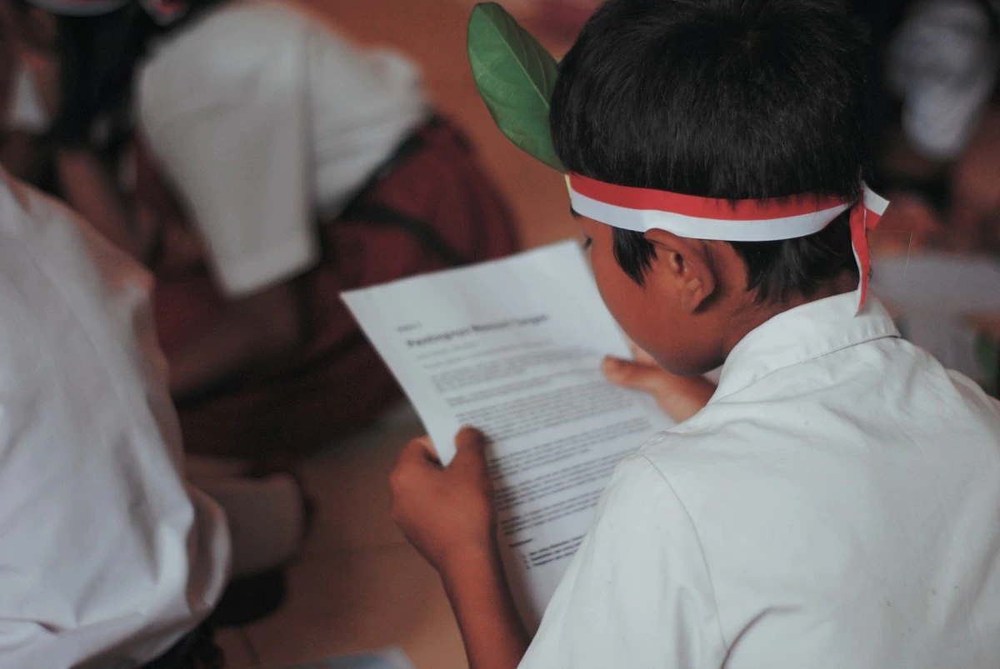

Debates surrounding the educational sector and education for the underprivileged have been one of the hottest topics for eons, and remains so till date, and not without reason. The discussions range from whether there should be an increase in reservation of seats for underprivileged children, what sort of education they should receive, the number of institutions required, and even to what kind of teachers will be deemed suitable. Several schemes have been instituted to ensure that underprivileged children receive a solid educational base including 'Samagra Shiksha' and 'Strengthening for Providing Quality Education in Madrassas' (SPQEM). The Right to Education guarantees free and quality education to all children aged between 6 and 14, and additionally, incentives like Mid-Day Meal, scholarships and even reservations in private schools are designed to encourage maximum enrolment of students from underprivileged backgrounds.
The key to reforming education for the underprivileged lies in first going back to basics. Understanding the term 'underprivileged' and comprehending the socio-economic background of the underprivileged is an absolute necessity. The umbrella term covers multiple categories of people across various spectrums. Each category has different upbringings, views, ambitions and goals. It is necessary to segregate these various sections and then provide customisable solutions that are both viable and sustainable. Having worked with underprivileged children for over 5 years, I have realised that it is not enough to pull children to school with the promise of a meal or a scholarship. The problem goes deeper than that, and cannot be solved by one entity alone. These children yearn to learn. Through a combination of informal education, skill development, co-curricular activities and regular meals, these children can build a solid foundation and can then merge into formal systems of education. The journey is slow, but is more effective and has shown significant and verifiable results. It is only by covering multiple verticals that the underprivileged can be aided.